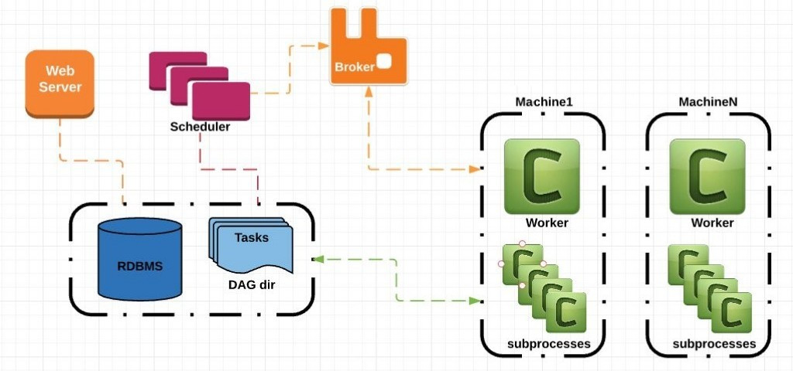
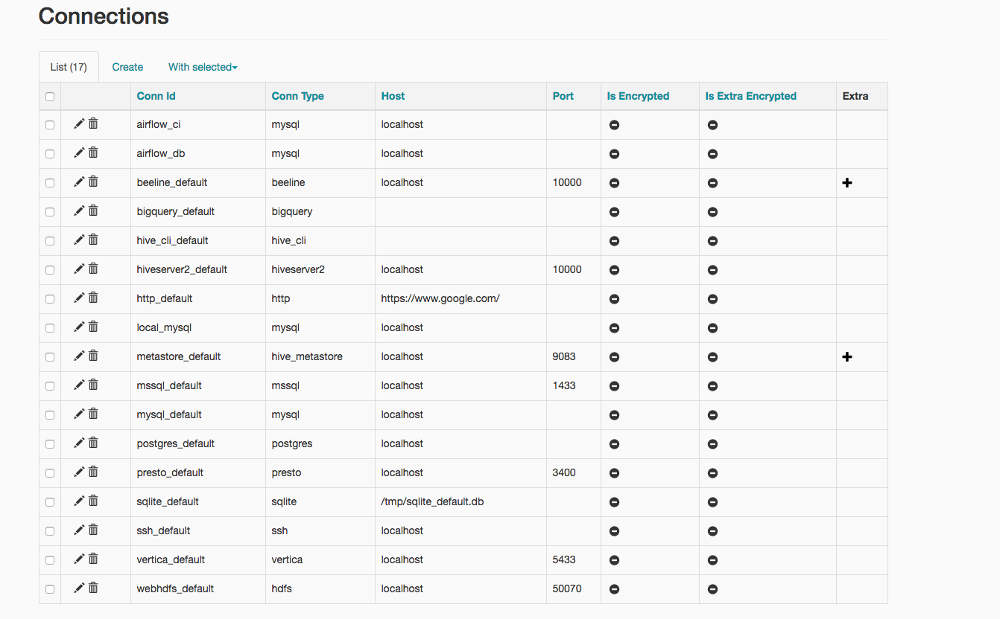
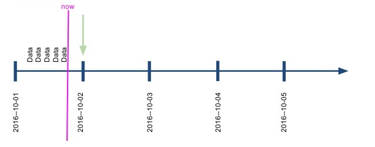
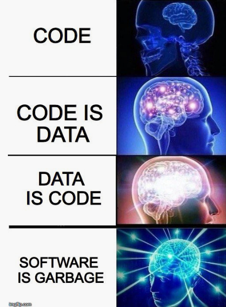

Airflow

Шорин Александр / @kxepal
План
- Познакомиться с Airflow
- Понять базовые концепции
- Пройти небольшой tutorial
- Поделиться опытом из продакшена
Чего не будет: пересказа документации
Что такое Airflow?
- Система распределенного выполения графа задач
- Разаработа в AirBnB
- В 2016г. передана в Apache Software Foundation
- Написана на Python с использованием популярных библиотек
- Развивается сообществом
- Используется AirBnB, Yahoo!, Spotify, Mail.ru, PayPal, Quora, Stripe ... сотни их!
Почему Airflow?
- Задачи описываются на Python, нет никаких XML
- Приятный Web UI
- Отчеты и логи задач
- Мониторинг и алертинг
- Микросервисная архитектура легко масштабируется
- Большое количество батареек в коробке для работы с Hive, Spark, Druid, Jira, Slack, Vertica, MySQL, Redis etc.
Рамблер / Airflow
- Заменил самописную систему на cron
- Два года в продакшене
- 60+ DAG
- 4250+ задач в день
- Много радости и
болигрусти
Концепции Airflow

- DAG: Direct Acyclic Graph
- Task:
- Operator: задача, которая делает вещи
- Sensor: задача, которая чего-то ждет
Архитектура Airflow
 By Sumit MaheshwariAirflow Scheduler
- Периодически сканирует dag_folder
- Контролирует валидность состояний задач
- Создает задания для worker`ов
Airflow Worker
- Принимает задания на исполнения из указанных очередей
- Контролирует выполнние оператора / сенсора
- Результат пишет в базу данных
Airflow Serve Logs
- Предоставляет доступ к локальным логам workerов по HTTP
- Web-сервер обращается к нему за логами задачи
Airflow Webserver
- Flask + Gunicorn
- Обеспечивает доступ к админке
- Поддерживает авторизацию и разделение DAGов по пользователям (owners)
- RBAC TODO
- Есть demo режим с read-only и защитой данных
Пример
from airflow import DAG
from airflow.operators import HiveOperator
from airflow.operators.sensors import HdfsSensor
from airflow.utils.dates import days_ago
dag = DAG(
schedule_interval='@hourly',
start_date=days_ago(7),
)
await_logs = HdfsSensor('/logs/ad/{{ ds }}', dag=dag)
create_partition = HiveOperator(
'ALTER TABLE ad_logs_raw ADD PARTITION(date={{ ds }})',
dag=dag
)
create_partition.set_upstream(await_logs)
Connections
Пример
from airflow import DAG
from airflow.operators import BaseOperator
from airflow.operators.sensors import BaseSensor
from airflow.utils.dates import days_ago
class CustomSensor(BaseSensor):
def poke(self, context: dict) -> bool:
return self.data_is_available(context['ds'])
def data_is_avaiable(self, date: str) -> bool:
...
class CustomOperator(BaseOperator):
def execute(self, context: dict):
...
dag = DAG(
schedule_interval='@daily',
start_date=days_ago(7),
)
custom_sensor = CustomSensor(dag=dag)
custom_operator = CustomOperator(dag=dag)
custom_operator.set_upstream(custom_sensor)schedule interval
Статусы задач
| QUEUED | задача помещена в очередь |
| SCHEDULED | задача принята воркером |
| RUNNING | задача выполняется |
| SUCCESS | задача успешно выполнена |
| FAILED | задача упала с ошибкой |
| SHUTDOWN | отправлен сигнал воркеру на завершние задачи |
| UP_FOR_RETRY | ожидается перезапуск |
Tutorial
https://goo.gl/TtV2WMHint: pip install apache-airflow
Airflow в продакшене
Магические комментарии
- Проблема:
Airflow не видит DAG
- Решение:
- Файл с дагом должен находиться в dag_folder
- Файл содержит слова DAG и airflow
Чек-лист: не запускается задача
- [ ] - Проверить логи scheduler, что задание на запуск выдается;
- [ ] - Проверить, что у задачи корректная очередь (queue) и есть worker её обслуживающий;
- [ ] - Проверить в flower что worker отвечает на полученное задание;
- [ ] - Запустить задачу локально (airflow run ...) под те же окружением;
Airflow Webserver
- Проблема:
добавили / удалили / изменили даг, в UI ничего не изменилось
- Решение:
перезапуск web-сервера после каждого изменения в дагах
Airflow + PgBouncer
- Проблема:
Быстрое исчерпание доступных соединений, приводящее к зависаниям всего
- Решение:
- Мониторинг и алертинг
- Но может оказаться, что это утечка соединений из-за idle транзакций
Sensors Deadlock
- Проблема:
что-то сломалось, данные не доезжали день-два, проблема устанена, задачи не запускаются
- Решение:
- Алертинг
- Настройка execution_timeout (не путать с timeout!)
- Ручное вмешательство
- Лучше иметь две очереди под сенсоры: критические и прочие;
Connections и SD / HA сервисы
- Проблема:
настроить работу штатных операторов / сенсоров с HA сервисами (Hadoop Namenode, Hive metastore, etc)
- Решение:
- Ставить балансер перед каждым HA сервисом;
- Помещать HA сервисы за общим DNS адресом;
- Периодически обновлять Сonnections через DB;
- Не пользоваться Connections впринципе.
DAG as a Code
- Проблема:
- Необходим статический анализ дагов;
- Cложно понять какой даг получится;
- Хочется абстрагироваться от Airflow;
- Решение:
https://pypi.python.org/pypi/airflow-declarative
args = {
'owner': 'airflow',
'start_date': airflow.utils.dates.days_ago(2)
}
dag = DAG(
dag_id='example_bash_operator', default_args=args,
schedule_interval='0 0 * * *',
dagrun_timeout=timedelta(minutes=60))
run_this = BashOperator(
task_id='run_after_loop', bash_command='echo 1', dag=dag)
run_this.set_downstream(run_this_last)
for i in range(3):
i = str(i)
task = BashOperator(
task_id='runme_'+ i,
bash_command='echo "{{ task_instance_key_str }}" && sleep 1',
dag=dag)
task.set_downstream(run_this)
args = {
'owner': 'airflow',
'start_date': airflow.utils.dates.days_ago(2)
}
dag = DAG(
dag_id='example_bash_operator', default_args=args,
schedule_interval='0 0 * * *',
dagrun_timeout=timedelta(minutes=60))
run_this = BashOperator(
task_id='run_after_loop', bash_command='echo 1', dag=dag)
run_this.set_downstream(run_this_last)
for i in range(3):
i = str(i)
task = BashOperator(
task_id='runme_'+ i,
bash_command='echo "{{ task_instance_key_str }}" && sleep 1',
dag=dag)
task.set_downstream(run_this)
Эволюция программиста
dags:
example_bash_operator:
args:
dagrun_timeout: 1h
default_args:
owner: airflow
start_date: 2017-07-27
schedule_interval: 1d
do:
- operators:
runme_{{ item }}:
class: airflow.operators.bash_operator:BashOperator
args:
bash_command: >
{% raw %}
echo "{{ task_instance_key_str }}" && sleep 1
{% endraw %}
flow:
runme_{{ item }}:
- run_after_loop
with_items: [0, 1, 2]
operators:
run_after_loop:
class: airflow.operators.bash_operator:BashOperator
args:
bash_command: echo 1